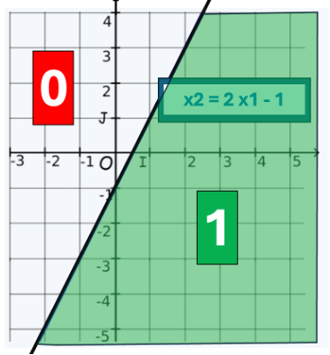
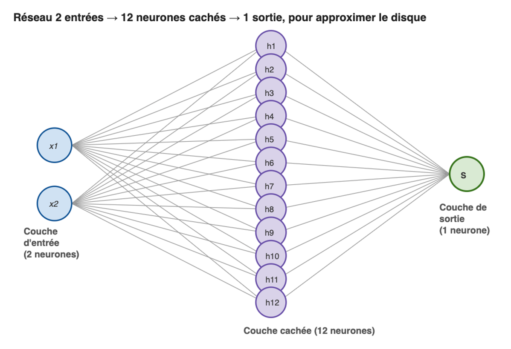
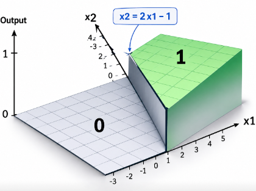
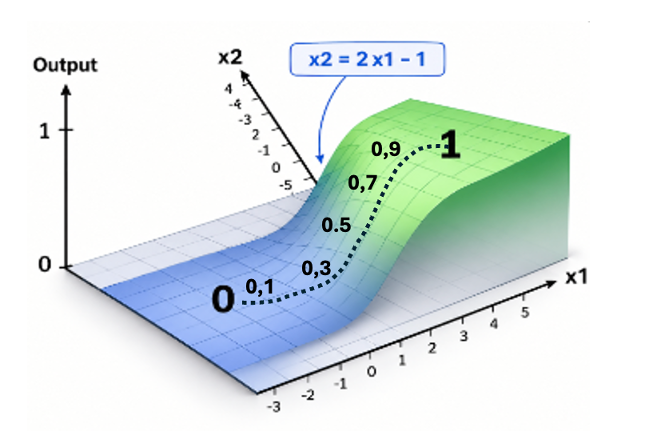

Composer des transformations
Combiner des neurones
Le neurone unique perceptron est un classifieur binaire
Tout neurone coupe l'espace en deux parties avec une
frontière linéaire qui sépare sa zone d'activation de sa
zone d'inhibition.
En deux dimensions, c'est une droite de séparation.
|
 |
La fonction d'activation à échelon du perceptron ramène toute prédiction à 0 ou à 1. |
Détecter une portion de l'espace

Approximation d'un disque par des droites |
On peut cibler toute figure convexe par de multiples droites issues de multiples perceptrons. |
Couche cachée
Le découpage se fait par une couche cachée qui porte les neurones nécessaires.
La consolidation se fait à la couche de sortie par une combinaison
des sorties précédentes.
Elle répondra au final dans le disque (1) ou en dehors du disque (0).

Apprentissage des couches : une limite du perceptron
L'apprentissage consiste à réduire l'erreur, la distance entre la prédiction et la cible en avançant dans la bonne direction. Avec la fonction d'activation à échelon, entre la zone « oui » et la zone « non » il y a un front vertical.L' erreur sera toujours discrète et les actions limitées: 0 (rester), +1 (descendre) ou −1 (remonter)

On n'a aucun moyen de répartir cette erreur en arrière vers les neurones de la couche cachée.
Cette incapacité a bloqué le développement des réseaux avec couche cachée.
l'hiver de l'IA
Ce qu'il reste du perceptron d'origine
La mécanique : tout neurone continue de fonctionner sur le même principe de calcul du score brut qui sépare l'espace en deux parties.
Ce sont les fonctions d'activation qui transforment le score brut en prédiction qui ont évolués.
Le nom : on continue d'utiliser le terme dans MLP
, Multi Layer Perceptron, le nom générique des réseaux de neurones.
Remplacer le mur par une pente
Une fonction d'activation en pente douce (continue et dérivable),
bornée entre 0 et 1, permet de mesurer l'erreur.
Là où le seuil ne disait rien,
la position dit tout : la pente donne la direction et la distance à la frontière donne l'écart à combler.

La surface de prédiction avec une fonction d'activation sigmoïde.
la frontière correspond à une sortie de 0,5.
Les principales fonctions d'activation et leurs courbes

Un bon entraineur de modèle choisira sa courbe en fonction du problème à traiter
Fonctions d'activation
- A seuil (H) : abandonnée
- Sigmoïde ( logistic, 1970s) : une courbe en S douce qui écrase toute valeur entre 0 et 1.
- Tanh : la même courbe en S, mais entre -1 et +1. Centrée sur zéro, elle converge souvent plus vite.
- ReLU (Rectified Linear Unit, popularisée en 2010) : si l'entrée est négative, sortie 0 ; sinon, sortie = entrée. Ultra simple à calculer, elle a permis d'entraîner des réseaux très profonds et a déclenché la révolution du deep learning.